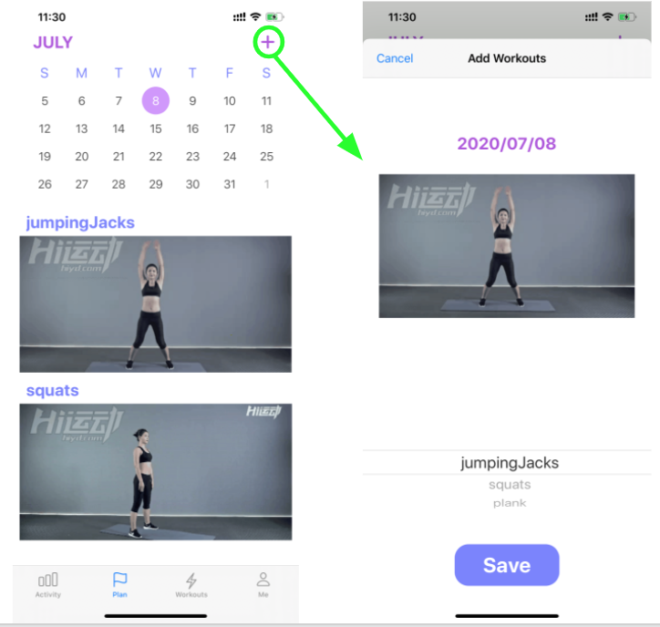

The plan tab page of ARCoach is designed to display a highly customizable calendar and users can check or add the workouts for the specific day through the calendar. ARCoach uses JTCalendar plugin as a customized calendar to achieve the above features. JTCalendar supports week view mode and limits date range by defining a start and an end to the calendar. When the user clicks the date in the calendar, corresponding added workouts would be displayed below the calendar.
To store the scheduled workouts together with dates, the database schema is designed according to dates. After the user adds a workout and clicks the save button, the information about this plan would be uploaded into the cloud database under the path of uid-trainPlan-yyyymmdd-workout.
After the user adding a workout and clicking the save button, ARCoach would return to the plan tab page and read data from the database again to refresh the content. However, there is a time delay for the cloud database in practice, in other words, the plan tab page may not show the workouts previously added. To avoid this delay, ARCoach saves data both in the local array and online database, uses the local array to refresh data, and uses the online database to save data permanently.
Below are the screenshots of the plan tab page. The calendar shows recent one-month dates with today’s date as default. There is an add button at the right up corner, which would direct to add the workout page. In add the workout page, users select different workouts through the picker, the image of workouts would change as the picker rotates.
 Screenshots of Calendar
Read next: Plank Detection.